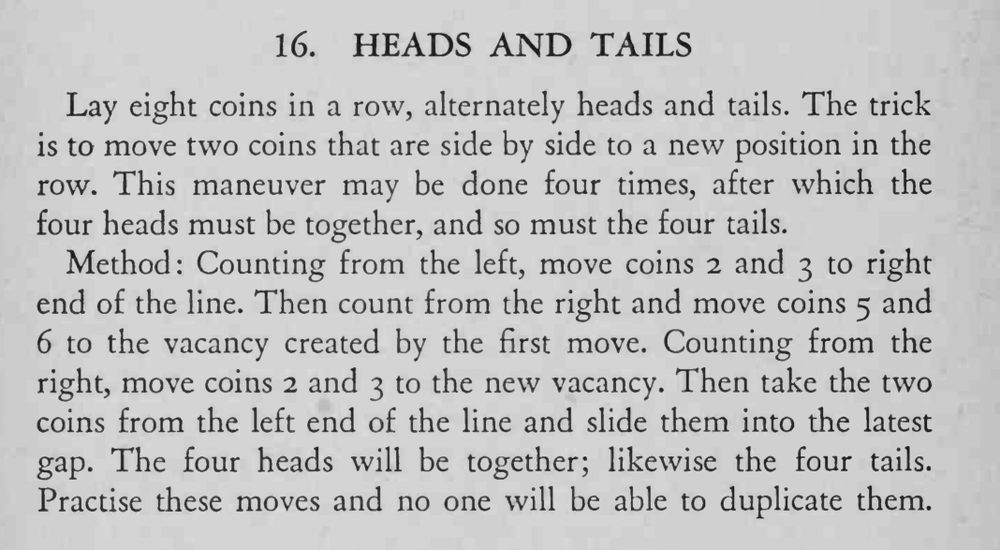

八枚硬币正反相间排成一行，魔术师只动四次、每次挪两枚相邻的硬币，最后四个正面在一起、四个反面也在一起。
每次都要先数清是从左还是从右；顺序错一步就归不了类。

Lay eight coins in a row, alternately heads and tails. The trick is to move two coins that are side by side to a new position in the row. This maneuver may be done four times, after which the four heads must be together, and so must the four tails. Method: Counting from the left, move coins i and 3 to right end of the line. Then count from the right and move coins 5 and 6 to the vacancy created by the first move. Counting from the right, move coins 2 and 3 to the new vacancy. Then take the two coins from the left end of the line and slide them into the latest gap. The four heads will be together; likewise the four tails. Practise these moves and no one will be able to duplicate them.